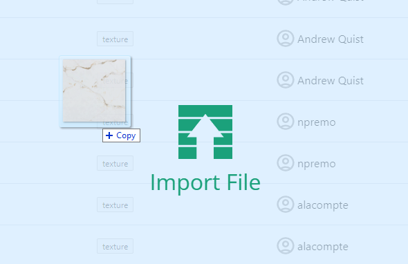
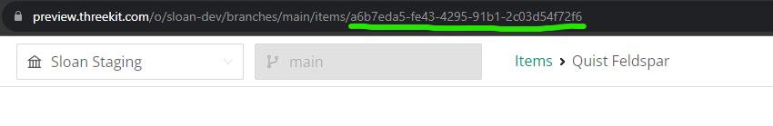
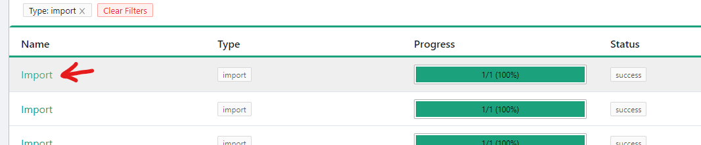
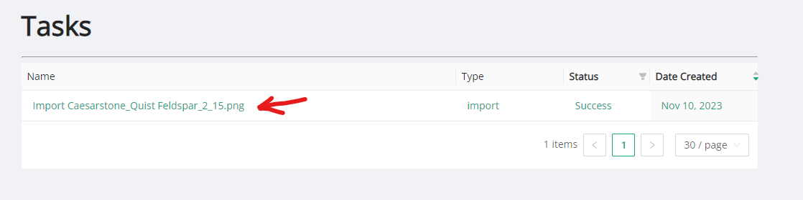
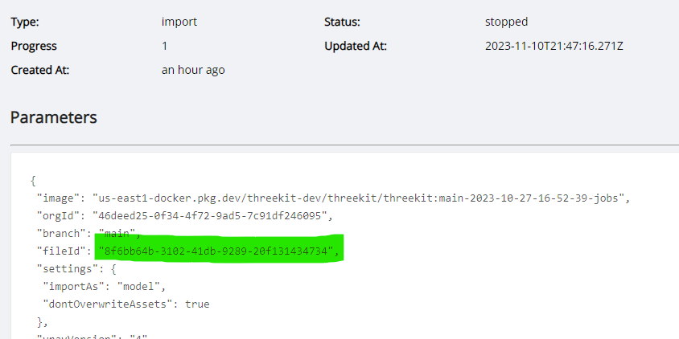

A rectangular image will stretch in odd ways. Make sure the ratio of your image is 1:1
The name of your image will determine how the color will look. Use this template to quickly generate a valid name.
Go to this link and navigate to the sink_textures or cabinet_textures folder. Drag/drop your image into the asset list to start the upload.
After the image is finished uploading, go to the Catalog and find your newly created item. It will have the color name in the title. Click on the name to see its page.
Copy the long string of characters in the page URL. This is your Item ID.
Go to the Jobs page and click on the name of the most recent import. Then follow the task link.
 Find the section at the top labelled 'fileId' and copy (no quotes).
Depending on your material type, visit the Sink Colors or Laminate Colors datatable. Download the most up-to-date file and add a new row (using your preferred spreadsheet editor). Fill in the columns with this data: